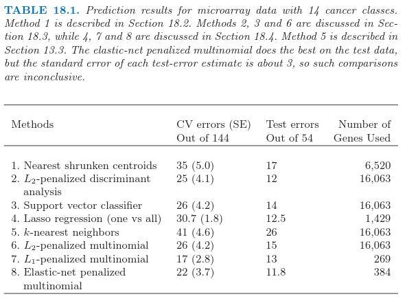

18.3 二次正则化的线性分类器
Contents
18.3 二次正则化的线性分类器¶
Ramaswamy et al. (2001)1提出一个更加困难的微阵列分类问题，涉及 144 个病人的 14 种癌症类型的训练集，以及含有 54 个病人的测试集。已知 16063 个基因的表达值。

表 18.1 显示了通过 \(8\) 个不同的分类方法得到的预测结果。每个病人的数据首先经过标准化后使得均值为 \(0\)，方差为 \(1\)；这似乎提高了整个例子的预测正确性，表明每个基因表达谱的形状是很重要的，而不是表达的绝对水平。在每种情形中，选取正则参数使得交互验证误差最小，并且展现了每个参数值的测试误差。当有多余一个的正则参数得到最小的交互验证误差，报告该值对应的测试误差的平均值。
RDA（正则判别分析），正则多元逻辑斯蒂回归，以及支持向量机是更复杂的方法，试图研究数据的多变量信息。我们依次描述每个方法，以及一系列正则化方法，包括 \(L_1\) 和 \(L_2\)，以及两个都有的方法。
（）正则化判别分析¶
正则化判别分析 (RDA) 在 4.3.1 节已经描述。线性判别分析涉及 \(p\times p\) 类间协方差阵的逆。当 \(p >> N\)，该矩阵可以很大，秩至多为 \(N < p\)，因此是奇异矩阵。RDA 克服了对类间协方差矩阵的估计 \(\hat\Sigma\) 正则化的问题。这里我们采用一个将 \(\hat\Sigma\) 收缩到其对角阵版本的 RDA：
note “Recall”
注意到 \(\gamma = 0\) 对应对角 LDA，也是最近收缩重心的“无收缩”版本。式（ 18.9 ） 的收缩形式很像岭回归（3.4.1 节），将整个特征的协方差矩阵收缩到对角（标量值）矩阵。实际上，将线性判别分析看成是类别响应变量的最优得分的线性回归（见 12.6 节的 式（ 12.57 ）），这个等价性变得更加精确。
note “Recall”
求大型 \(p\times p\) 矩阵逆的计算负担通过采用 18.3.5 节的方法可以克服。\(\gamma\) 的值通过交互验证取为表 18.1 中第二行的值；所有 \(\gamma\in(0.002,0.550)\) 给出了相同的 CV 和测试误差。RDA 进一步的发展，除了协方差矩阵还包括重心的收缩，可以在 Guo et al. (2006)2中找到。
（）二次正则的逻辑斯蒂回归¶
逻辑斯蒂回归（4.4 节）可以用相似的方式进行改进来处理 \(p >> N\) 的情形。在 \(K\) 个类别的情形下，我们采用多类别逻辑斯蒂回归模型 式（ 4.17 ）:
note “weiya 注：Recall”
这有 \(K\) 个对数几率参数 \(\beta_1,\beta_2,\ldots,\beta_K\) 的系数向量。我们通过最大化惩罚的对数似然来正则化拟合
正则化自动解决了参数化中的冗余，并且使得 \(\sum_{k=1}^K\hat\beta_{kj}=0,j=1,\ldots,p\)（练习 18.3）。注意到常数项 \(\beta_{k0}\) 没有正则化（并且应该被设成 0）。
info “weiya 注：Ex. 18.3” 已解决，详见 Issue 119: Ex. 18.3.
最后得到的优化问题是凸的，而且可以通过牛顿算法或者其他数值技巧求解。详细细节在 Zhu and Hastie(2004)3的工作中给出。Friedman et al.(2010)4 提供了计算两个和多个类别逻辑斯蒂回归模型的正则化路径的软件。表 18.1，第 6 行报告了多重类别逻辑斯蒂回归模型的结果，称之为“multinomial”。可以证明 (Rosset et al., 2004a5)，对于可分数据，当 \(\lambda\rightarrow 0\)，正则化的（两个类别的）逻辑斯蒂回归估计（重标准化）收敛到 最大边界分类器(maximal margin classifier)（12.2 节）。这给出了支持向量机的一种受欢迎的替代方式，特别是在多重类别的情形中，这将在下面讨论。
（）支持向量分类器¶
两个类别情形的支持向量机在 12.2 节中讨论。当 \(p > N\) 时，特别受欢迎，因为一般情形下类别是可以被超平面完全可分的，除非在不同类别中有相同的特征向量。没有任何正则化，支持向量分类器寻找具有最大空白的分离超平面；也就是，超平面得到训练数据之间最大的间距。有点吃惊的是，当 \(p > > N\) 时未正则化的支持向量机通常和最优正则版本表现得一样好。过拟合经常似乎不是一个问题，部分是因为误分类损失的不敏感性。
有许多不同的方式将两个类别的支持向量分类器推广为 \(K > 2\) 个类别的情形。在 一对一方法 (ovo) 中，我们计算所有的 \(\binom{K}{2}\) 成对分类器。对每个测试点，预测类别是在大多数成对比较中获胜的那个。在 一对多方法 (ova) 中，每个类别与所有的其他类别在 \(K\) 次两类别比较中进行比较。为了对某个测试点分类，我们计算 \(K\) 个分类器中的置信度（到超平面的符号距离）。胜利者是有最高置信度的类别。最后，Vapnik(1998)6，Weston and Watins(1999)7 提出推广两类别准则 式（ 12.7 ） 的（有点复杂）多重类别准则。
note “weiya 注：Recall”
\begin{array}{ll}
\underset{\beta,\beta_0}{min}&\;\frac{1}{2}\Vert\beta\Vert^2+C\sum\limits_{i=1}^N\xi_i\\
s.t.& \xi_i\ge 0,y_i(x_i^T\beta+\beta_0)\ge 1-\xi_i,\forall i
\end{array}
\tag{12.8}
\hat\beta = (\mathbf{X^TX}+\lambda\mathbf I)^{-1}\mathbf{X^Ty}\tag{18.14} $$
用 \(\mathbf R\V^T\) 替换 \(\mathbf X\)，并且进行一些运算，可以证明它等于
（练习 18.4）。
info “Ex. 18.4” 已证。详细证明过程见 Issue 117: Ex. 18.4。
因此 \(\hat\beta = \mathbf V\hat\theta\)，其中 \(\hat\theta\) 是采用 \(N\) 个观测 \((r_i,y_i),i=1,2,\ldots,N\) 的岭回归估计。换句话说，我们可以简单地将数据矩阵从 \(\mathbf X\) 降维成 \(\mathbf R\)，并且对 \(\mathbf R\) 的行进行操作。这个技巧将 \(p > N\) 时的计算花费从 \(O(p^3)\) 降为 \(O(pN^2)\)。
这些结果可以推广到所有参数为线性并且有二次惩罚的模型。考虑任意的监督学习问题，我们采用线性函数 \(f(X)=\beta_0+X^T\beta\) 来建立条件分布 \(Y\mid X\) 的参数模型。我们通过在数据上最小化损失函数 \(\sum_{i=1}^NL(y_i,f(x_i))\) 和 \(\beta\) 上的二次惩罚来拟合参数 \(\beta\)。逻辑斯蒂回归是个很有用的例子。接着我们有下面简单的定理：
令 \(f^*(r_i)=\theta_0+r_i^T\theta\)， \(r_i\) 如 式（ 18.13 ） 定义，并且考虑成对优化问题：
于是有 \(\hat\beta_0=\hat\theta_0, \hat\beta=\mathbf V\hat\theta\)。
这个定理说我们可以用 \(N\) 维的向量替换 \(p\) 维向量，并且像之前一样进行带惩罚的拟合，但是有更少的预测变量。\(N\) 维向量的解 \(\hat\theta\) 接着通过简单的矩阵运算转化为 \(p\) 维向量的解。这个结果是统计学传说之一，理应当被广泛知道——更多细节详见 Hastie and Tibshirani(2004)9 等人的工作。
几何上看，我们把特征旋转到除了前 \(N\) 个坐标分量外其余分量都为 0 的坐标系中。这个旋转是允许的，因为二次惩罚在旋转下是不变的，并且线性模型是等价的。
这个结果可以应用到本章中讨论的许多学习算法，比如正则化（多类别）逻辑斯蒂回归，线性判别分析（练习 18.6），以及支持向量机。
info “Ex. 18.6” 已证。详细解答过程见 Issue 118: Ex.18.6。
这也应用到有二次正则化的神经网络（11.5.2 节）。然而，注意到，这并不能应用到类似 lasso 的方法中，这些方法对系数加的是非平方惩罚（\(L_1\)）。
一般地，我们采用交互验证去选择参数 \(\lambda\)。可以看到（练习 18.12）我们仅需要对原始数据构造一次 \(\mathbf R\)，并且用这个作为每个 CV 折的数据。
info “Ex. 18.12” 已解决，详见 Issue 121: Ex. 18.12.
12.3.7 节中的支持向量机的“核技巧”在不同的情形下利用了这节中的降维。假设我们有 \(N\times N\) 的（内积）矩阵 \(\mathbf{K=XX^T}\)。由 式（ 18.12 ） 我们有 \(\mathbf{K=UD^2U^T}\)，所以 \(\mathbf K\) 捕捉了与 \(\mathbf R\) 一样的信息。练习 18.13 显示了我们怎样利用这节的想法从 \(\mathbf K\) 和它的 SVD 分解来拟合岭逻辑斯蒂回归。
info “Ex. 18.13” 部分解决，详见 Issue 122: Ex. 18.13，不知道应该怎么说明对任意合适的 \(\mathbf K\) 都适用，欢迎交流讨论。
- 1
Ramaswamy, S., Tamayo, P., Rifkin, R., Mukherjee, S., Yeang, C., Angelo, M., Ladd, C., Reich, M., Latulippe, E., Mesirov, J., Poggio, T., Gerald, W., Loda, M., Lander, E. and Golub, T. (2001). Multiclass cancer diagnosis using tumor gene expression signature, PNAS 98: 15149–15154.
- 2
Guo, Y., Hastie, T. and Tibshirani, R. (2006). Regularized linear discriminant analysis and its application in microarrays, Biostatistics 8: 86–100.
- 3
Zhu, J. and Hastie, T. (2004). Classification of gene microarrays by penalized logistic regression, Biostatistics 5(2): 427–443.
- 4
Friedman, J., Hastie, T. and Tibshirani, R. (2010). Regularization paths for generalized linear models via coordinate descent, Journal of Statistical Software 33(1): 1–22.
- 5
Rosset, S., Zhu, J. and Hastie, T. (2004a). Boosting as a regularized path to a maximum margin classifier, Journal of Machine Learning Research 5: 941–973.
- 6
Vapnik, V. (1998). Statistical Learning Theory, Wiley, New York.
- 7
Weston, J. and Watkins, C. (1999). Multiclass support vector machines, in M. Verleysen (ed.), Proceedings of ESANN99, D. Facto Press, Brussels.
- 9
Hastie, T. and Tibshirani, R. (2004). Efficient quadratic regularization for expression arrays, Biostatistics 5(3): 329–340. 下载